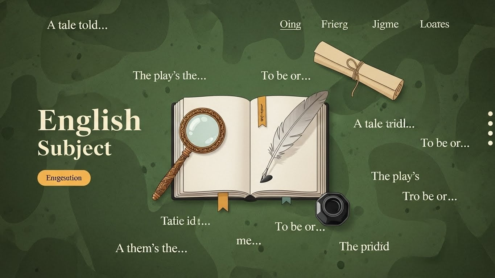

Giới thiệu về web học trực tuyến
Website học trực tuyến là một nền tảng giáo dục hiện đại được xây dựng với mục tiêu mang lại môi trường học tập linh hoạt, tiện lợi và hiệu quả cho tất cả mọi người. Trong bối cảnh công nghệ thông tin phát triển mạnh mẽ và nhu cầu học tập suốt đời ngày càng tăng, hình thức học trực tuyến trở thành xu hướng tất yếu, giúp người học tiếp cận tri thức một cách dễ dàng mà không bị giới hạn bởi không gian hay thời gian. Website được thiết kế với giao diện trực quan, thân thiện với người dùng, hỗ trợ đa nền tảng như máy tính, máy tính bảng và điện thoại thông minh, giúp người học có thể tham gia vào các khóa học bất cứ khi nào họ muốn.
Trên website, người học có thể tìm thấy hàng trăm đến hàng nghìn khóa học thuộc nhiều lĩnh vực khác nhau như công nghệ thông tin, lập trình, ngoại ngữ, kỹ năng mềm, marketing, quản trị kinh doanh, thiết kế đồ họa, âm nhạc, và thậm chí cả những khóa học chuyên sâu về khoa học dữ liệu, trí tuệ nhân tạo hay tài chính. Tất cả các khóa học đều được biên soạn bởi đội ngũ giảng viên, chuyên gia và những người có nhiều năm kinh nghiệm trong nghề, đảm bảo nội dung chất lượng, chính xác và cập nhật theo xu hướng mới nhất.
Hệ thống bài giảng được xây dựng dưới dạng video rõ nét, kết hợp với tài liệu minh họa, bài tập thực hành, câu hỏi trắc nghiệm và bài kiểm tra cuối khóa, giúp người học không chỉ tiếp thu kiến thức một chiều mà còn tự đánh giá được mức độ hiểu bài của mình. Đồng thời, website còn tích hợp tính năng theo dõi tiến độ học tập, giúp người dùng biết được họ đang ở đâu trong lộ trình, đã hoàn thành bao nhiêu phần trăm khóa học và những nội dung nào cần bổ sung thêm. Với mỗi khóa học hoàn thành, người học sẽ nhận được chứng chỉ điện tử, có thể sử dụng trong hồ sơ xin việc, đánh giá năng lực hoặc phục vụ các mục tiêu học tập khác.
Không chỉ dừng lại ở việc cung cấp nội dung học tập, website còn tạo ra một môi trường tương tác cộng đồng sôi nổi. Người học có thể đặt câu hỏi cho giảng viên, thảo luận với các học viên khác trong diễn đàn hoặc tham gia các buổi livestream, webinar để giải đáp thắc mắc trực tiếp. Điều này giúp việc học trực tuyến không còn nhàm chán hay cô lập, mà trở thành một trải nghiệm kết nối và chia sẻ kiến thức đầy thú vị. Ngoài ra, hệ thống còn được trang bị các thuật toán gợi ý khóa học phù hợp dựa trên sở thích và lịch sử học tập của người dùng, từ đó định hướng lộ trình phát triển cá nhân một cách khoa học và hiệu quả.
Về mặt kỹ thuật, website được phát triển trên nền tảng công nghệ hiện đại, tối ưu tốc độ tải trang và khả năng xử lý dữ liệu lớn. Hệ thống máy chủ mạnh mẽ đảm bảo website luôn hoạt động ổn định ngay cả khi có số lượng lớn người dùng truy cập cùng lúc. Bảo mật thông tin cá nhân và dữ liệu người học luôn được đặt lên hàng đầu, đảm bảo mọi hoạt động học tập được diễn ra trong môi trường an toàn, tin cậy.
Ngoài ra, website còn hỗ trợ nhiều phương thức thanh toán linh hoạt cho các khóa học trả phí, đồng thời cung cấp nhiều khóa học miễn phí hoặc ưu đãi theo từng thời điểm nhằm tạo điều kiện cho mọi đối tượng có cơ hội tiếp cận tri thức. Những người bận rộn cũng có thể lưu lại bài học, tải xuống tài liệu hoặc xem lại các bài giảng đã học mà không mất thêm chi phí. Nhờ đó, website trở thành một người bạn đồng hành đáng tin cậy cho học sinh, sinh viên, người đi làm và bất cứ ai muốn mở rộng kiến thức hoặc phát triển kỹ năng bản thân.
Có thể nói, website học trực tuyến không chỉ là nơi cung cấp kiến thức mà còn là một hệ thống giáo dục toàn diện giúp người học chủ động tiếp cận tri thức mới, mở rộng cơ hội nghề nghiệp và thích nghi với sự thay đổi nhanh chóng của xã hội hiện đại. Với sự tiện lợi, khoa học và hiệu quả mà nó mang lại, website học trực tuyến đang dần trở thành lựa chọn hàng đầu và góp phần quan trọng trong quá trình chuyển đổi số của nền giáo dục ngày nay.
Khóa học Tiếng Anh trực tuyến
Cùng chúng tôi khám phá những phương pháp học tiếng Anh mới nhất, hiệu quả nhất, giúp bạn cải thiện nhanh chóng các kỹ năng nghe, nói, đọc, viết mọi lúc mọi nơi.
Đăng ký ngay để nhận tài liệu học tập miễn phí!

Chi tiết khóa học Tiếng Anh
Khóa học tiếng Anh trực tuyến là mô hình giáo dục tiên tiến, mang lại tính linh hoạt tối đa, phá vỡ mọi rào cản về địa lý và thời gian. Học viên có thể dễ dàng truy cập vào các khóa luyện thi, giao tiếp, hoặc tiếng Anh chuyên ngành chất lượng cao ngay tại nhà, phù hợp cho người bận rộn.
Điểm mạnh lớn nhất là cá nhân hóa lộ trình học tập. Hệ thống sử dụng AI để điều chỉnh nội dung và tốc độ học theo trình độ riêng, giúp học viên tập trung vào các kỹ năng còn yếu. Học viên được luyện tập phản xạ với gia sư bản ngữ qua các buổi học video call 1-kèm-1, sử dụng các công cụ tương tác hiện đại. Phương pháp này không chỉ hiệu quả mà còn có chi phí thấp hơn, mở ra cơ hội tiếp cận tri thức toàn cầu một cách dễ dàng và thiết thực.